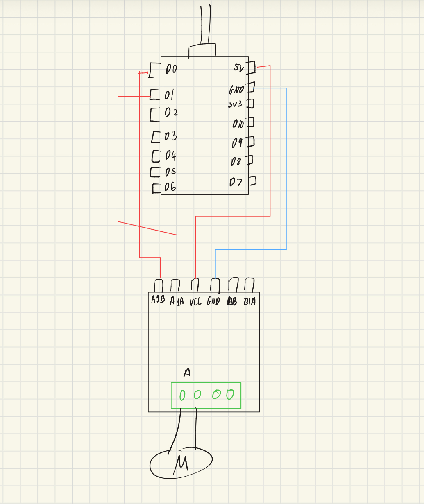
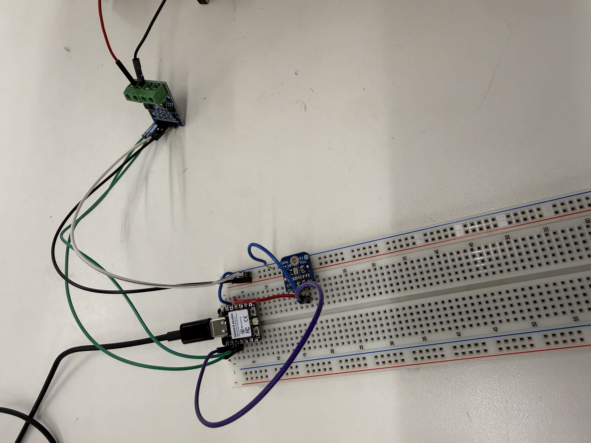
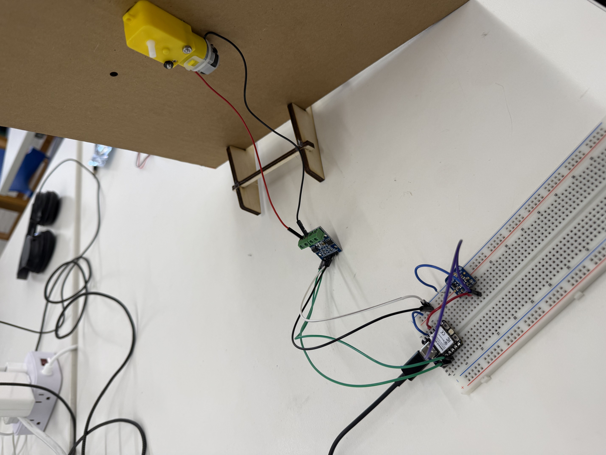

<div class="textcontainer">
<br></br>
<h3>Week 4: Microcontroller Programming</h3>
This week was microcontroller programming
<p class="margin"></p>
<h2>Process & Demo</h2>
My idea was to use PWM (analogWrite) to control the rotation speed of my motor.
<div style="display:flex; justify-content:center; margin-top:30px; margin-bottom:40px;">
<video class="tv-frame" controls style="width:70%; max-width:900px;">
<source src="fastslow.mp4" type="video/mp4">
Your browser does not support the video tag.
</video>
</div>
<p class="margin"></p>
<h2>Circuit Diagram</h2>
I had a simple circuit with an ESP32 and a motor driver.
<div style="display:flex; justify-content:center; margin-top:30px; margin-bottom:40px;">
<p></p>
</div>
<p class="margin"></p>
<h2>Code</h2>
<div class="code-terminal">
<div class="code-terminal-header">
<span class="code-dot red"></span>
<span class="code-dot yellow"></span>
<span class="code-dot green"></span>
<span class="code-terminal-title">sketch.cpp</span>
</div>
<div class="code-terminal-content">
<pre><code class="language-cpp">void setup() {
pinMode(D0, OUTPUT);
pinMode(D1, OUTPUT);
}
void loop() {
analogWrite(D0, 150);
digitalWrite(D1, LOW);
delay(2000);
analogWrite(D0, 250);
digitalWrite(D1, LOW);
delay(2000);
}</code></pre>
</div>
</div>
<p class="margin"></p>
New Goals:
- Utilize the SPW 2430 microphone such that when I shout, the ATAT will start running
- Maybe just speaking can be walking but shouting can be running? Or maybe the louder you shout, the faster it goes?
<h2>MADE THE IMPROVEMENTS!</h2>
So I used the SPW 2430 and wrote code such that above a certain threshold volume the walker would run.
To get this threshold value I recorded the ambient noise of the room and tested what my voice peaked at
when I shouted. My code just utilized basic conditional statements.
<div style="display:flex; justify-content:center; gap:20px; flex-wrap:wrap; margin-top:30px; margin-bottom:40px;">
<p></p>
<p></p>
</div>
<div style="display:flex; justify-content:center; margin-top:30px; margin-bottom:40px;">
<video class="tv-frame" controls style="width:70%; max-width:900px;">
<source src="running.mp4" type="video/mp4">
Your browser does not support the video tag.
</video>
</div>
<div class="code-terminal">
<div class="code-terminal-header">
<span class="code-dot red"></span>
<span class="code-dot yellow"></span>
<span class="code-dot green"></span>
<span class="code-terminal-title">sound_detection.cpp</span>
</div>
<div class="code-terminal-content">
<pre><code class="language-cpp">const int micPin = A0;
const int micValue = 0;
const int threshold = 1000;
void setup() {
pinMode(D0, INPUT);
pinMode(D1, OUTPUT);
pinMode(D2, OUTPUT);
Serial.begin(9600);
digitalWrite(D2, LOW);
}
void loop() {
int micValue = analogRead(micPin);
Serial.println(micValue);
delay(100);
if (micValue < threshold) {
// if sound < threshold, just walk
analogWrite(D1, 150);
digitalWrite(D2, LOW);
} else {
// if sound > threshold, RUN
Serial.println("FASTER SPEED");
analogWrite(D1, 250);
digitalWrite(D2, LOW);
delay(5000);
}
}</code></pre>
</div>
</div>
</div>